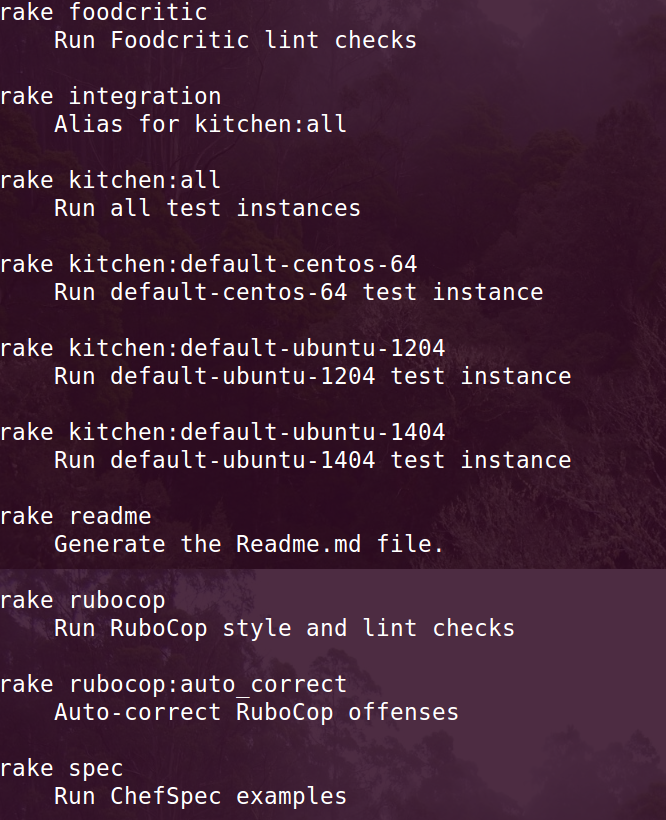

NMD-SKELETOR
https://github.com/newmediadenver/nmd-skeletor
Drupal DevOps Meetup
David Arnold | @davidxarnold
DevOps Practitioner | @newmediadenver
NMD-SKELETOR
- What is it?
- That is nice and all.... but why not use built-in tools such as knife?
NMD-SKELETOR
- Bundler
- Rake
- Test Kitchen
- Rspec / ChefSpec
- ServerSpec
- TravisCI
- Ruby linters – Rubocop & Foodcritic
Chef recipe base skeleton components:

Skeletor uses bundler to disable the use of shared Gems and installs them into the vendor/bundle directory.
"bundle install"
Rake: Ruby Build Tool
https://github.com/jimweirich/rake
- Build Readme from metadata
- Run RSpec tests
- Run Ruby linters
Rake task
Rake Tasks
"rake -D"
Test Kitchen
- Supports many virtualzation technologies: Amazon EC2, Blue Box, CloudStack, Digital Ocean, Rackspace, OpenStack, Vagrant, Docker .....
- Testing frameworks: Bats, shUnit2, RSpec, Serverspec
- Provides a fast and efficient way to define virtual servers, cookbooks, attributes and run full suite of tests against multiple different environments with chefsolo.
- Not just for Chef. Supports many other tools such as Puppet and Salt.
Leverages vagrant to test your code in isolation :
Testing
- Creates an in-memory system and runs defined tests.
- We primarily used it to test that attributes and variables are set as expected.
- Invaluable when using multiple recipes (Helps catch errors that might be overwriting or overriding the same values).
Rspec / ChefSpec
Rspec
Testing
- Integration testing framework that can easily be configured to run tests against local/remote/development/production servers.
- Confirms that everything defined in tests has been accomplished by looking at a live system.
- Validates that our defined system is set the way we expect it to be.
ServerSpec
ServerSpec
Testing
- Hosted, distributed continuous integration service used to build and test projects hosted on GitHub
- It is awesome!!
- Can be used to test php for drupal module development
TravisCI
Ruby linters – Rubocop & Foodcritic
Tracks down coding errors, confusing (and sometimes inefficient) code.
Helps write code that follows community style guidelines
Similar to the drupal coder module
What does it all do?
and what does it get me?
NMD-SKELETOR
https://github.com/newmediadenver/nmd-skeletor
David Arnold | @davidxarnold
https://github.com/davidxarnold
/